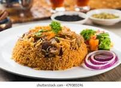

pilau

Spiced up Pilau
pilau is a flavorful dish made by cooking rice with spices, vegetables, and usually some kind of protein like meat or beans. It's a popular dish in many cultures around the world, including Indian, Middle Eastern, Central Asian, and Mediterranean cuisines. The ingredients can vary depending on the region and personal preference, but the basic idea is to cook the rice with a mix of spices and other tasty ingredients to create a delicious and aromatic dish.
Ingredients
- Rice
- Protein
- Aromatic Vegatable
- spices
- cumin
- corriander
- cinammonn
- cloves
- water
- oil
Steps
- Place the basmati rice in a fine-mesh sieve and rinse it under cold water until the water runs clear. This helps remove excess starch and prevents the rice from becoming sticky when cooked. Drain the rice and set it aside.
- Heat the vegetable oil or ghee in a large skillet or saucepan over medium heat. Add the chopped onion and cook until soft and translucent, about 3-4 minutes. Add the minced garlic and grated ginger, and cook for another 1-2 minutes until fragrant.
- Add the whole spices (cumin seeds, cloves, cardamom pods, cinnamon stick, and bay leaf) to the skillet with the onions, garlic, and ginger. Stir and cook for about 1 minute to toast the spices and release their flavors.
- Add the rinsed and drained basmati rice to the skillet with the onions and spices. Stir well to coat the rice with the aromatic mixture and toast it slightly, about 2 minutes.
- Pour in the chicken or vegetable broth (you can also use water if you prefer) and diced tomatoes. If using additional spices like turmeric, ground cumin, ground coriander, and chili powder, add them now. Stir everything together and bring the mixture to a boil.
- Once the liquid comes to a boil, reduce the heat to low and cover the skillet with a tight-fitting lid. Simmer the pilau for about 15-20 minutes, or until the rice is cooked through and the liquid has been absorbed. Avoid stirring the rice too much during cooking to prevent it from becoming mushy.
- Once the rice is cooked, remove the skillet from the heat and let it sit, covered, for a few minutes. Then, use a fork to fluff the rice gently to separate the grains. Taste and adjust the seasoning with salt if needed.
- Transfer the pilau to a serving dish and garnish with fresh cilantro or chopped green onions if desired. Serve hot as a flavorful side dish or as a main course. Enjoy your delicious homemade pilau!